Best AI agents for writing code (2026)
Coding agents that write, edit and refactor code from plain-language requests, in your terminal, editor or browser. We list 403 tools for writing code below, each with a link-checked page, pricing as the maker states it and alternatives.
Updated
403 tools: 268 open source, 19 source-available, 61 free or freemium, 38 paid, usage-based or enterprise, 17 pricing on the maker's site.
Terminal and CLI agents (56)
OmniRush
OmniRush is a desktop coding agent for Windows, macOS and Linux, with a terminal CLI as well. It works through the files of your own projects, reading code, making edits and running commands, and gives free access to frontier models from a model picker, with GPT 6 Astra as the default. Builds for each platform are published on its releases page.
Added
Wake
Wake is a desktop app that collects every coding-agent conversation on your computer into one searchable place. It reads the local history kept by Claude Code, Codex, Cursor, Copilot CLI, Gemini CLI, Antigravity, Devin and other agents, groups sessions by agent and project, and lets you find a past conversation in seconds and resume it in your terminal. It is read-only and nothing leaves your machine. Built in Rust, it runs on macOS, with Linux and Windows in beta.
Added
OpenKnowledge
OpenKnowledge is a free, local-first markdown editor and knowledge base built for working alongside AI agents. It looks and feels like a Notion-style WYSIWYG editor, with callouts, tabs, Mermaid diagrams and media blocks, but every page stays a plain markdown file on your disk. Coding agents such as Claude Code, Codex, Cursor, Gemini CLI and dozens of others can read and write the same files through its integrations, so specs, team wikis and LLM wikis stay in one place that both people and agents keep up to date. It ships as a desktop app plus a web UI and CLI.
Added
opcode
A desktop app for Claude Code that lets you manage sessions, build custom agents, track usage and browse project history from a GUI instead of the terminal.
Added
CloudCLI
A web and mobile interface for Claude Code, Codex and Gemini CLI, so you can run and steer coding sessions from a browser or phone. Self-host free or use the hosted CloudCLI service.
Added
Toad
A terminal front end from Will McGugan (creator of Rich and Textual) for running AI coding agents like Claude Code, Gemini CLI and Codex through one polished, fast interface.
Added
nodeterm
A node-based terminal manager for macOS and Linux that shows real terminals and coding agents like Claude Code, Codex and Gemini as live nodes on an infinite canvas you can wire together.
Added
Zero
An open-source terminal coding agent written in Go that works with 30+ model providers, supports MCP, skills and subagents, and keeps all sessions on your own disk.
Added
tty7
A terminal workbench whose shell sessions survive closing the app, built so coding agents can drive other agents' terminals and you can reattach remotely.
Added
luvus
Mission control for AI coding agents: run, watch, resume and orchestrate Claude Code, Codex, Copilot, opencode and others from one terminal with a live view of each agent.
Added
hax
A minimalist terminal coding agent shipped as a single native C binary using a few MB of RAM, with first-class local models plus OpenAI, Anthropic and OpenRouter support.
Added
Reason Network
A small peer-to-peer daemon that links coding-agent sessions across your team's computers, so Claude Code, Codex, Cursor, Gemini CLI and other agents can see who is working on what and message each other directly, with no server.
Added
opencodex
A local provider proxy that lets OpenAI Codex (CLI, app and SDK) and Claude Code run on other model providers such as Claude, Gemini, Grok, DeepSeek or local Ollama models.
Added
HOL Guard
HOL Guard is a free, open-source (Apache-2.0), local-first security layer for AI coding agents such as Claude Code, Codex, Cursor and GitHub Copilot CLI. On supported integrations it checks risky shell commands, reads of secret-bearing files, package installs and new or changed MCP tools before they run, lets you allow, ask or block each action, and keeps a local record for review. It installs with pipx (hol-guard) and works offline; optional Guard Cloud adds synced approvals, team policy and dashboards.
Added
Libretto
An open-source CLI, debugging agents and browser tools for building and maintaining reliable web integrations, helping coding agents inspect real pages and write automations that keep working.
Added
Agentic Scientist
Sakana AI's open-source pipeline that turns coding agents such as Claude Code, Codex, Cursor and Gemini CLI into AI scientists: from a task file they propose ideas, run and score experiments and ablations, then write the paper.
Added
Magpie
Free, open-source menu bar app and local gateway that lets any coding agent (Claude Code, Codex, Gemini CLI, OpenCode and 60+ more) use any model provider or subscription, with failover when a quota runs out.
Added
Vectoree
Vectoree gives coding agents a backend behind one project key: an OpenAI-compatible model gateway across providers, an MCP tool hub, auth, Postgres and storage, driven by a skill and CLI, pay-as-you-go with no monthly fee.
Added
Pi
Minimal, extensible open-source terminal coding agent and agent toolkit from Earendil, with a multi-provider LLM API, TypeScript SDK, RPC mode and installable extensions, skills and themes.
Added
Warp
Agentic development environment built from the terminal, now open source, for running coding agents and cloud software factories.
Added
Kilo Code
Open-source AI coding agent for VS Code, JetBrains, the CLI and the cloud that works with 500+ models at no markup.
Added
coucou
Mac notch and phone companion that monitors your Claude Code, Codex, Cursor and Gemini CLI sessions and lets you approve permissions on the go.
Added
TUIOS
Terminal window manager with tiling panes, persistent sessions and one inbox where coding agents report their state and message each other.
Added
AutoDev
Multi-agent development platform built on Kotlin Multiplatform for research, coding, review and data queries across IntelliJ, VS Code, CLI and more.
Added
Intelligent Terminal
Experimental fork of Windows Terminal with native integration for ACP-compatible agent CLIs.
Added
Ante
Self-contained Rust terminal coding agent from Antigma Labs that works with any model and has no runtime dependencies.
Added
CLI Agent Orchestrator
AWS Labs tool that coordinates several coding CLIs such as Claude Code, Kiro and Codex as a team, each in its own tmux session.
Added
Orke
BOMTOBE's free desktop workspace for Claude Code, Codex and other coding agents: terminal sessions, an in-app browser the agent can use, a Git review window and scheduled AI employees.
Added
Factory
Agent-native software development platform whose Droids write code, run tests and handle deployments from the IDE, terminal or Slack.
Added
skills.sh
Vercel Labs' open-source CLI (npx skills) and directory for finding, installing and sharing agent skills across Claude Code, Codex, Cursor, OpenCode and 75+ other coding agents.
Added
Botpress
Platform for building and deploying LLM-powered chatbots and agents, with a visual studio, integrations hub, CLI and SDK.
Added
Agents CLI
Google's CLI and skills that teach coding assistants to build, evaluate and deploy agents on Google Cloud and the Gemini platform.
Added
Open Terminal
Self-hosted terminal service from the Open WebUI team that gives AI agents an API to run commands, manage files and execute code.
Added
OpenGAP
Framework-agnostic, git-native standard and CLI for defining AI agents so a repository becomes a runnable agent.
Added
HyperFrames
HeyGen's open-source framework that renders HTML, CSS and animations into deterministic MP4 videos, usable from a CLI or by coding agents through skills.
Added
Open Interpreter
Terminal coding agent forked from OpenAI's Codex and tuned for low-cost and open-weight models, with switchable harness modes that imitate tools like Claude Code.
Added
opencode
Open-source terminal coding agent that works with many model providers.
Added
Claude Code
Anthropic's terminal coding agent that edits code, runs commands and handles git.
Added
OpenAI Codex CLI
OpenAI's open-source coding agent for the terminal; also runs in the cloud.
Added
Gemini CLI
Google's open-source terminal agent powered by Gemini.
Added
Codewhale
Rust agent engine and terminal coding client with model choice, tool approvals and review flows.
Added
Oh My Pi
Terminal coding agent with IDE features wired in, from Stencil Labs.
Added
Crush
Charm's terminal coding agent with a polished TUI, multiple models and MCP support.
Added
Qwen Code
Open-source terminal coding agent from the Qwen team.
Added
Terax
Lightweight terminal-first AI development environment.
Added
Munder Difflin
Free, open-source harness that runs Claude Code, Codex, Gemini CLI and other terminal agents together like an office.
Added
mini-SWE-agent
Tiny 100-line agent that solves GitHub issues or helps on the command line, from the SWE-agent team.
Added
Entire CLI
CLI that captures AI agent sessions alongside your Git commits.
Added
gptme
Terminal agent with local tools that writes code, runs commands, browses the web and uses vision.
Added
Grok CLI
Open-source coding agent for the Grok API.
Added
Chaterm
Open-source AI terminal for deploying, troubleshooting and automating cloud infrastructure.
Added
Nanocoder
Community-built open coding agent for your terminal.
Added
Coddo
Desktop app that puts a visual interface and voice input on top of terminal coding agents.
Added
Aider
Pair-programming agent in your terminal that commits changes to git.
Added
Amp
Agentic coding tool for the terminal and editor.
Added
MyShell
Platform to build, share and use AI agents and apps.
Added
MCP servers (42)
Diagrid Catalyst MCP
The Diagrid Catalyst MCP server lets AI coding agents build and operate Dapr Workflows and Dapr durable agents on Diagrid Catalyst, the managed platform for long-running, fault-tolerant agent and workflow apps. Through it an agent can create and inspect workflows, check running instances and manage Catalyst resources from your MCP client. It is the official server from Diagrid, the company behind Dapr, and needs a Catalyst sign-in.
Added
PhoneUse
PhoneUse gives AI agents phones of their own to operate. Agents get cloud Android phones that boot in seconds and scale to hundreds, or real retail iPhones and Androids in a San Francisco rack, tapped by a robot stylus, for apps that detect emulators, with real carrier numbers for SMS and 2FA codes. One MCP server with tools such as acquire, read screen, tap, type, swipe, open app and read SMS plugs into Claude, Cursor, Codex or Windsurf, and there is a Python SDK and REST API. On-demand cloud phones are billed per minute, with flat monthly prices for dedicated and real phones.
Added
IDA MCP (Hex-Rays)
IDA MCP is Hex-Rays' official MCP server for the IDA disassembler and decompiler. It lets AI coding agents and people work on the same IDA databases at the same time, so an agent can inspect functions, types and decompiled code, rename and annotate, and coordinate analysis across several related binaries in one session. It works with the IDA GUI through a plugin or headless through idalib, installs with Hex-Rays' hcli tool, and needs IDA 9.4 or later.
Added
BrowserStack MCP
BrowserStack's official MCP server, letting coding agents run manual and automated tests on real browsers and devices, debug failures and check accessibility from the IDE.
Added
LaunchDarkly MCP
LaunchDarkly's official MCP server, so agents can create, update and clean up feature flags, AI configs and targeting rules from the IDE or chat.
Added
Openlayer MCP
Openlayer's MCP server, letting coding agents pull evaluation results, failing tests and monitoring data from Openlayer so they can debug and improve AI systems from the IDE.
Added
CC Switch
Desktop manager for Claude Code, Codex, Gemini CLI, OpenCode, OpenClaw and other coding agents that switches API providers in one click and manages MCP servers, skills and prompts.
Added
MobileBuildMCP
Sentry's MCP server and CLI that gives coding agents build, test and run tools for iOS and macOS projects.
Added
21st Magic MCP
MCP server from 21st.dev that lets Cursor, Claude Code and Windsurf search and generate React and Tailwind UI components inside the editor.
Added
CodeGraphContext
MCP server and CLI that index local code into a graph database so AI assistants can query code relationships.
Added
shadcn/ui MCP Server
MCP server that gives AI assistants shadcn/ui v4 components, blocks and demos for React, Svelte, Vue and React Native.
Added
ripwire
Zero-dependency CLI and MCP server that gives coding agents a ranked call graph, blast radius and tests-to-run before and after edits.
Added
Next.js DevTools MCP
Vercel's MCP server that connects coding agents to running Next.js dev servers for live errors, routes, logs and docs.
Added
Svelte MCP
Official Svelte MCP server that gives coding agents Svelte docs and autofixing tools.
Added
Cypress Cloud MCP
Cypress's MCP server that brings Cypress Cloud test results and accessibility reports into AI coding workflows.
Added
Headroom
Library, proxy and MCP server that compresses tool outputs, logs, files and RAG chunks locally before they reach the LLM, cutting tokens for coding agents.
Added
Framelink Figma MCP
MCP server that gives Cursor and other coding agents Figma layout data so they can implement designs accurately in one shot.
Added
Observal
Self-hosted registry and insight engine for sharing coding-agent skills, MCP servers and agents across a team.
Added
Figma Console MCP
Design-system-focused MCP server that reads and writes Figma and checks design-code parity and accessibility.
Added
Unla
Lightweight MCP gateway that turns existing MCP servers and APIs into MCP endpoints without code changes, with a management UI.
Added
Azure DevOps MCP
Microsoft's MCP server that gives AI agents access to Azure DevOps work items, repos, pipelines and more, local or hosted.
Added
Grounded Docs MCP
Self-hosted MCP server that indexes up-to-date documentation from websites, GitHub, npm and PyPI so coding agents query the right version.
Added
Sentry MCP
Sentry's MCP server and CLI that give coding agents access to Sentry issues, errors and traces for debugging.
Added
Unleash MCP
Unleash's MCP server for managing feature flags from AI coding assistants.
Added
DevCycle MCP
DevCycle's MCP server for managing feature flags from AI coding assistants.
Added
Pimlico AI
CLI and MCP server that lets coding agents manage a Pimlico smart-account infrastructure account, from balances and logs to sponsorship policies.
Added
Sonatype MCP
Sonatype's dependency-management MCP server that gives coding agents component versions, security analysis and Trust Score recommendations.
Added
REA
MCP server and CLI that lets coding agents reverse engineer native binaries, Electron and JavaScript apps, .NET assemblies and live websites, using Ghidra, Hopper or IDA under the hood.
Added
Paper2Agent
Multi-agent system that turns a research paper and its code into a working MCP server and agent skills you can query and run.
Added
Stack Overflow MCP
Official remote MCP server that lets coding agents search and pull vetted Stack Overflow questions and answers, with a free daily call allowance per user.
Added
Encord Merlin
Encord's beta MCP server and in-app agent that creates annotation projects, ontologies and workflows and reports label-quality analytics from Claude, Codex or other AI tools.
Added
Langflow
Visual drag-and-drop builder for AI agents and workflows that you can run locally, deploy as an API or expose as an MCP server.
Added
Context7
MCP server and platform that feeds coding agents up-to-date, version-specific library documentation.
Added
Chrome DevTools MCP
Official MCP server that lets coding agents control and inspect a live Chrome browser through DevTools for debugging and performance work.
Added
Activepieces
Open-source automation platform with AI agents and hundreds of pieces usable as MCP servers.
Added
GitMCP
Free remote MCP server that gives agents up-to-date docs and code for any GitHub project.
Added
Figma MCP Server
Figma's MCP server that brings design context from Figma files into coding agents.
Added
MATLAB MCP Server
MathWorks' MCP server that lets coding agents run MATLAB code and tests.
Added
SonarQube MCP Server
SonarQube MCP server for code quality and security analysis from agents.
Added
Buildkite MCP
Buildkite's MCP server exposing pipelines, builds, jobs and logs to coding agents.
Added
BetterClaw
Build and deploy AI agents without code on 28+ model providers or local LLMs, with 120+ app connectors, any MCP server and unlimited skills, running in Telegram, Slack, Discord and Gmail.
Added
CircleCI MCP
CircleCI's MCP servers (hosted and CLI) for diagnosing build failures, inspecting runs and managing CI pipelines from coding agents.
Added
Code review (26)
PR Lens
PR Lens helps people review code that agents wrote. For each pull request it draws animated architecture and data-flow diagrams inside the PR, showing which parts of the app were added, changed or removed, what else depends on the change and how a request now moves through the system. It also flags likely bugs, security holes and design problems in the same review comment, with a ready prompt to hand each fix to your coding agent or an autofix. The open-source core runs locally and installs as an agent skill.
Added
Sphinx
Open-source Git hook for agent-assisted coding: before code your agent wrote is pushed to a protected branch, it reads the diff and quizzes you on what the change actually does when things go wrong, and only lets the push through once you answer correctly. Works with Claude Code, Codex, Cursor and OpenCode.
Added
Superlog
Superlog runs AI agents on routine engineering work around production. You set up automations with triggers and connectors, for example rating each new Sentry issue, posting a plain-language summary to Slack and opening a pull request with the fix, comparing error rates and latency against their normal range every hour, adding missing logs and spans to hard-to-debug code paths, or answering community questions from your code and docs. You choose the model and agent harness and bring your own tokens or subscriptions. The core is open source (Apache-2.0) with a hosted version.
Added
OpenComputer
OpenComputer is a platform for building and deploying long-running AI agents as code. You define an agent as a TypeScript function with its model, tools and MCP servers, deploy it with one command, and every session gets its own real cloud computer, with managed sessions, schedules and API keys kept outside the agent's runtime. Templates include a coding agent that edits a repo, runs checks and opens a draft pull request, and market-research and GTM agents; its own Slack coding agent runs on it. Pricing is pay-as-you-go for model calls and per-second machine time.
Added
Emdash
A free, open-source agentic development environment (YC W26) for running Claude Code, Codex and other coding agents in parallel, each in its own worktree, then reviewing diffs, PRs and CI in one place.
Added
Lody
A team workspace for running AI coding agents in parallel in isolated Git worktrees, with live diff review, GitHub integration and access from phone or desktop.
Added
ThinkRail
JetBrains' lightweight agentic IDE that pairs you with the pi coding agent, with isolated git-worktree workspaces, editor tabs, terminals and diffs.
Added
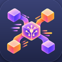
Muxin
Muxin is a free, open-source desktop app that puts all your Macs, Linux, Windows and cloud machines in one window, so you can run Claude Code, Codex and other agent CLIs on any of them, see their screens and logs, and take changes to a pull request.
Added
sem
Semantic layer on top of Git that diffs, blames and traces impact by function and class instead of by line, with an MCP server for coding agents.
Added
OpenQodex
Code review that runs inside your coding agent before you push, combining security and quality scanners with a separate AI reviewer.
Added
Open Code Review
Alibaba's AI code review CLI that combines deterministic pipelines with an LLM agent to post line-level comments on Git diffs, using OpenAI or Anthropic models.
Added
Shippie
Extendable code review and QA agent that reads your diff, explores the codebase and posts focused review comments.
Added
Kodus
Self-hostable AI code reviewer for GitHub, GitLab, Bitbucket and Azure DevOps pull requests that works with the model you choose.
Added
Baz
AI code review platform that helps engineering teams ship better code faster.
Added
CodeRabbit
AI code review for pull requests, with PR triage, change explanations and continuous security monitoring.
Added
cubic
AI code review that catches bugs in complex codebases on every pull request.
Added
Greptile
AI code reviewer that reads your whole codebase to review pull requests and catch bugs before merge.
Added
Jules
Google's asynchronous coding agent that works on your GitHub repo in a cloud VM and comes back with a tested pull request.
Added
GitKraken MCP
GitKraken's MCP server, via the GitKraken CLI, for managing repos, pull requests and issues across GitHub, GitLab and Bitbucket.
Added
Open SWE
LangChain's asynchronous coding agent that takes work from GitHub issues, Slack or Linear, implements it in an isolated sandbox and opens a pull request.
Added
Roomote
Cloud coding agent from the Roo Code team that runs your real dev environment, verifies its work, reviews code with a second model and hands back PRs with live previews; works from Slack, Teams, GitHub and Linear, self-hosted or on its cloud.
Added
Qodo
AI code review and testing agents that work in the IDE, the terminal and pull requests to catch issues before merge.
Added
Hunk
Review-first terminal diff viewer for checking what coding agents changed.
Added
Plannotator
Visually annotate and review coding-agent plans and diffs, then send feedback back to the agent.
Added
Coldtea
Agents that test every pull request on real devices, watch production and file issues before users hit them.
Added
GitHub MCP Server
GitHub's official MCP server for letting agents work with repositories, issues, pull requests and Actions.
Added
Running many agents in parallel (24)
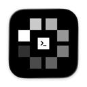
MonoCode
MonoCode is a desktop app that puts the coding agents you already pay for behind one interface. It drives Claude Code, Codex, Cursor, Grok Build, OpenCode, Antigravity, Pi, Hermes Agent, Devin and others, using the subscriptions and logins already on your machine, so you never buy tokens through it. Each tab is an agent session and one composer sends work to whichever agent you pick, so several sessions can run side by side. It runs on macOS, Windows and Linux, with an iOS app in public beta.
Added
LayerFS
LayerFS is a filesystem built for running many coding agents in parallel. Each agent mounts a complete, writable workspace on top of shared committed history, does its work, commits what it changed and goes away, so compute only exists while a command runs. Every tool call becomes a commit on a branch, same-file clashes between agents are refused rather than silently merged, each line records the step that wrote it, and any commit can be forked at no cost for recursive exploration or RL training. Agents on different computers share one serverless store with chunk-level deduplication.
Added
ZCode
ZCode is Z.ai's open-source AI coding workspace and official harness for GLM-5.3, with a desktop app, web interface and terminal agent that run multiple agents on long goals, plus control from WeChat, Feishu or Telegram.
Added
FuXi
A terminal AI coding agent that edits code, runs commands and works across 30+ model families, with parallel multi-provider inference and cost-aware model routing.
Added
Vicoa
Vicoa is an agent-native IDE for running Claude Code, Codex, Gemini and 40+ other coding agents in parallel, each on its own git worktree, from desktop, web or phone, with notifications when an agent needs you.
Added
Shipyard
Shipyard, from coss.com, runs Claude Code, Codex and other coding agents on your own dev machines, each task in its own worktree with its own terminals, dev server and live page previews, so agents keep working when your laptop sleeps.
Added
Dodaios
Open-source desktop agent OS for Windows, macOS and Linux (formerly Personal Jarvis): talk to it and it runs your coding CLIs side by side, your browser and your apps, with offline Whisper speech, a local wiki memory and support for Ollama, Claude or ChatGPT subscriptions.
Added
Oh My OpenAgent (OmO)
Agent harness add-on (OmO) for OpenCode and Pi that runs multi-model coding agent teams with memory, planning and parallel workflows.
Added
Conductor
Runs a team of coding agents such as Claude Code and Codex in isolated cloud sandboxes, with Mac and iPhone apps to review and merge their work.
Added
Container Use
Dagger's MCP server and CLI that gives each coding agent its own containerized environment so several can work in parallel safely.
Added
golutra
Multi-agent workspace that turns Codex, Claude Code and OpenClaw CLIs into one orchestrated team with parallel execution and task tracking.
Added
Zeron
Native control plane for running and monitoring Claude Code, Codex, Cursor, Devin and other coding agents locally.
Added
Mirror CLI
Reflection AI's terminal coding agent that reads code, edits files and runs commands in isolated git worktrees, using the open-weight Beam model by default.
Added
Orca
Agent development environment for running a fleet of parallel coding agents on your own subscriptions and reviewing their work.
Added
Herdr
Runtime for running and managing many coding agents side by side.
Added
Oh My Claudecode
Multi-agent orchestration layer for Claude Code that coordinates teams of specialized agents.
Added
Paseo
Orchestrate multiple coding agents from desktop and mobile.
Added
Superset
Agentic IDE for orchestrating many coding agents in parallel.
Added
Agent Orchestrator
Runs and supervises teams of coding agents from planning to merge.
Added
Worktrunk
CLI for managing Git worktrees so several AI agents can work in parallel.
Added
Mission Control
Self-hosted control plane for dispatching tasks to agents, reviewing runs and tracking spend.
Added
Maestro
Command center for orchestrating multiple coding agents.
Added
Imbue
AI research company building tools for coding agents, including Sculptor for running parallel agents.
Added
Verdent
AI coding agent that plans, codes and verifies tasks in parallel.
Added
Codebase context and code search (20)
AOCI-CODE
AOCI-CODE keeps a persistent, Git-versioned map of your whole codebase and database schema that your coding agent writes and a local MCP server governs. Agents in Codex, Claude Code, Cursor or OpenCode read the map once and know what each file is for, what it depends on and what must not break, instead of re-reading the repo on every task. It can index an existing codebase of up to about half a million lines and report how well it knows each area before taking over development.
Added
Understand-Anything
Turns any codebase, knowledge base or docs folder into an interactive knowledge graph you can explore and question, working inside Claude Code, Codex, Cursor, Copilot and Gemini CLI.
Added
Augment Code
Agentic software development platform for engineering teams, with coding agents that use deep context from large codebases.
Added
code-review-graph
Local code knowledge graph built with Tree-sitter that serves compact review context over MCP, so coding agents read only the files a change touches.
Added
Repomix
CLI and web tool that packs an entire repository into a single AI-friendly file (with an MCP server) so coding agents and LLMs get full codebase context.
Added
Claude Context
Zilliz MCP plugin that adds semantic code search to Claude Code and other coding agents, using your whole codebase as context.
Added
Repowise
Codebase intelligence tool that indexes code, call graph, git history and docs locally and answers questions for you and your coding agent over MCP.
Added
LazyCodex
Agent harness for Codex that adds project memory, planning, execution and verified completion for complex codebases.
Added
SocratiCode
Codebase context engine for AI agents with hybrid semantic search, dependency graphs and impact analysis, available as MCP, plugin or skill.
Added
Gemini MCP Tool
MCP server that lets Claude and other assistants call the Gemini CLI to analyze large files and codebases with its big context window.
Added
CLI-Anything
Open-source project from HKUDS that generates agent-native command-line interfaces for existing software, codebases and web APIs, with CLI-Hub, a registry of community CLIs that coding agents can install and drive.
Added
Graphify
Turns a codebase plus its docs, SQL schemas, configs and PDFs into a knowledge graph that coding agents can query.
Added
Context Mode
Context window optimizer for coding agents that sandboxes tool output and persists session memory.
Added
HumanLayer
Tools for getting coding agents to solve hard problems in complex codebases.
Added
Trail Code
Context layer that makes Claude Code, Cursor, Codex and other coding agents faster and cheaper on large codebases.
Added
Semble
Fast code search for agents that uses far fewer tokens than grep and file reads.
Added
Potpie
Builds a knowledge graph of your codebase so agents can help across the software lifecycle.
Added
Code-Graph-RAG
Graph-based RAG for monorepos that lets agents query and edit multi-language code.
Added
CodeBoarding
Generates interactive architecture diagrams of codebases.
Added
Codebase Memory MCP
MCP server that indexes codebases into a persistent knowledge graph so coding agents can look up structure quickly.
Added
Memory (20) See the full list →
superagnt
superagnt is a hosted MCP server and REST API that gives AI agents one key for the tools they lack: Instagram, TikTok, LinkedIn, YouTube, Reddit and X data, web scraping to clean markdown or JSON, email finding and lead enrichment, plus a real Postgres database, memory, schedules, queues and an inbox. Credits are charged only on successful calls, and it plugs into Claude, Cursor, Codex and other agents.
Added
Kestra
Kestra is an open-source, event-driven orchestration and scheduling platform where workflows are declared in YAML or built in a no-code editor. It includes an AI Agent task that gives flows an LLM with memory and tools, supports nested agents and the Agent-to-Agent (A2A) protocol, and can expose any flow as a tool to external AI agents through its MCP server. It runs in the cloud, on-prem or air-gapped and is Apache 2.0 licensed.
Added
MemoraX Code
MemoraX Code is a shared memory layer for coding agents such as Codex, Claude Code, OpenCode, Cursor, Trae and DeepSeek Harness. It recalls prior engineering knowledge, captures lessons from finished work, keeps repository knowledge and architecture history up to date, and carries your procedures and preferences into new sessions, bringing back only the memory relevant to the task at hand. It needs Node.js 20 or later and is MIT licensed.
Added
1Password for Agents
1Password for Agents lets personal AI agents sign in to your accounts without ever seeing your passwords or one-time codes. When a supported agent reaches a sign-in page, it asks for a credential from your vault; you approve the request, and 1Password fills it straight into the site, so the secret never enters the model or its memory. You can see and manage which agents have access to what. It launched with integrations for agents such as Claude Duet, ChatGPT Work and dots, Meta's Muse and Grok Bot, and needs a 1Password plan.
Added
Guaca
Desktop workspace inspired by Grok Bot where AI agents collaborate, write code and use tools; runs locally or on your own server, with shared conversations, persistent memory and MCP plugins. AGPL-3.0.
Added
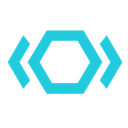
Sno Station
Sno Station turns the coding agents you already use (Claude Code, Codex, Cursor, Hermes, OpenClaw) into one squad on your machine with shared memory, and its Self Learning reviews their sessions and proposes skill-file fixes you approve.
Added
ai-memory
Fabio Akita's open-source long-term memory layer for coding agents: one Rust binary that keeps plain-markdown project memory and typed handoffs shared across 20+ harnesses such as Claude Code, Codex, Cursor and Gemini CLI, so you can switch agents, machines or teammates without re-explaining the project.
Added
Beacon
An open-source memory layer that captures traces from coding agents across harnesses and turns them into self-improving memory and visibility into what your agents did.
Added
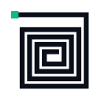
projectmem
A local-first memory layer for coding agents that records issues, attempts, fixes and decisions and warns your agent before it repeats a past mistake.
Added
Graphicle
Graphicle, from KarLex AI, is a single local Rust program that gives Claude Code, Cursor, Codex and other MCP agents a code graph and memory, returning excerpts with file and line references from your code, docs and past sessions, with no account or telemetry.
Added
Zeroboot
VM sandboxes for running agent code that start in under a millisecond by forking a warm snapshot with copy-on-write memory.
Added
Compozy
Operating system for AI agents that turns Claude Code, Codex, Gemini CLI and Cursor into a team with task handoff, loops, jobs and shared memory.
Added
Dosu
Knowledge infrastructure that keeps docs, specs and agent memory current with your code for teams and coding agents.
Added
MiMo Code
Xiaomi's terminal coding agent with persistent project memory across sessions; works with any major model provider and is tuned for Xiaomi's MiMo models.
Added
Beads
Issue-tracking memory for coding agents so they can keep track of long-running work.
Added
Claude-Mem
Gives coding agents memory across sessions by capturing what they do, compressing it and feeding the relevant context back in later.
Added
Deer Flow
ByteDance's open-source long-horizon agent harness that researches, codes and creates using sandboxes, memory and sub-agents.
Added
AgentMemory
Persistent memory layer for AI coding agents.
Added
TencentDB-Agent-Memory
Team-level memory hub that turns conversations, docs and code into shared memory for agents.
Added
Anchor Action Index
Shared memory of web workflows for Anchor's cloud browsers: computer-use agents replay proven paths as deterministic code and the model only steps in where a page has changed, exposed as tools on Anchor's MCP server and REST API.
Added
Sandboxes and secure execution (20) See the full list →
Cloudroom
Cloudroom runs Claude Code, Codex, Pi and other coding agents in the cloud, each in its own isolated sandbox on its own Git branch, using your own model logins; the Rust core is open source to self-host, and a desktop app manages local and cloud agents.
Added
agentOS
A lightweight operating system for agents from Rivet that runs coding agents and their tools inside fast WebAssembly sandboxes with a file system, processes and networking, so you can spin up thousands cheaply.
Added
Pydantic Deep Agents
Self-hosted terminal AI assistant and Python framework on Pydantic AI, with tool calling, sandboxed execution, multi-agent teams and checkpoints.
Added
Fragments
E2B's open-source Next.js template for AI-generated apps, like Claude Artifacts or v0, with generated code run in secure E2B sandboxes.
Added
AIO Sandbox
All-in-one Docker sandbox for AI agents that combines a browser, shell, files, MCP, VS Code Server and Jupyter in one container.
Added
forkd
MicroVM sandbox runtime for AI agent fan-out that forks KVM-isolated child VMs from a warm snapshot in milliseconds.
Added
Agent Safehouse
macOS sandbox for local coding agents that limits file and integration access with deny-first policy profiles.
Added
Perplexity SPACE
Perplexity's open-source sandbox platform that runs each agent task in its own Firecracker microVM, with credentials and network access controlled from outside.
Added
Cloudflare Sandbox SDK
SDK for running isolated code sandboxes on Cloudflare's network, so agents can execute commands and files safely from a Worker.
Added
Tensorlake
Serverless runtime that gives agents MicroVM sandboxes and durable orchestration for long-running background jobs.
Added
HolmesGPT
CNCF sandbox SRE agent that investigates alerts and incidents.
Added
NVIDIA OpenShell
Sandboxed runtime for autonomous agents with declarative YAML policies on file, network and credential access.
Added
OpenSandbox
Secure, fast sandbox runtime for AI agents to run code.
Added
CubeSandbox
Lightweight, concurrent sandbox for running AI agent code securely.
Added
microsandbox
Local-first microVM runtime for running untrusted agent code safely.
Added
nono
Zero-trust sandboxing for agent runtimes.
Added
Judge0
Sandboxed code execution system for running untrusted code from people and AI.
Added
ArcBox
Runs AI agents on isolated machines with their own kernel, filesystem and network.
Added
E2B
Secure cloud sandboxes for running agent-generated code.
Added
Modal
Serverless compute and sandboxes for AI workloads.
Added
IDE and editor agents (12) See the full list →
Onlook
An open-source visual editor for React and Tailwind apps where you design on a canvas and an AI agent writes the code. Edit layouts like in Figma, then export clean code to your own repo.
Added
Zed
High-performance, multiplayer code editor from the creators of Atom and Tree-sitter, with built-in AI agent editing for macOS, Linux and Windows.
Added
OpenSumi
Framework for building AI-native IDE products, with an MCP client and agent features.
Added
TRAE
AI coding IDE and agent that works alongside you in your editor to write, edit and run code.
Added
FastGPT
AI agent building platform with knowledge-base RAG, data processing and a visual workflow editor for deploying question-answering and automation apps.
Added
Cline
Autonomous coding agent inside VS Code with step-by-step approvals.
Added
Cursor
AI code editor with an agent mode and background agents.
Added
Roo Code
Discontinued: the open-source VS Code agent with custom modes (architect, code, debug) was shut down on May 15, 2026 and its repo archived; the team now builds Roomote, and roocode.com redirects there. Cline and the community fork ZooCode are the suggested alternatives.
Added
Jupyter AI
Official JupyterLab extension that connects AI agents and chat to notebooks.
Added
Runcell
AI agent for Jupyter notebooks that writes and runs code cells.
Added
Windsurf
AI IDE with the Cascade agent, now rebranded as Devin Desktop after Cognition acquired Windsurf (windsurf.com redirects there).
Added
Serena
MCP toolkit that gives coding agents semantic code retrieval and editing, like IDE features.
Added
Rules, skills and config (10) See the full list →
Foreman
Foreman from ThruWire supervises coding agents with fast decision models. You give it a ticket, spec or bug report and it runs Codex, OpenCode, Hermes or LangChain's Deep Agents Code as workers, or attaches to supported sessions such as Pi, then independently judges whether the job meets the original requirements, whether the test evidence is enough and when verification or human input is needed. Extra checks can be configured for your workflow, and it is MIT licensed.
Added
shadcn/lint
Linter for Tailwind design systems from shadcn that turns your design rules into checks coding agents can run and fix against.
Added
Universal Modder
Skills, tools and a shared knowledge base that let Claude Code and other coding agents mod PC games you own, from engine recon to in-game testing.
Added
LibreChat
Self-hosted, multi-user AI chat platform with agents, MCP, skills, code interpreter and support for OpenAI, Anthropic, Gemini, AWS, Azure and many more providers.
Added
OpenScience
Research agent workbench that reads the literature, writes and runs code and experiments and logs every step, with skills and connectors for databases like PubMed, UniProt and arXiv.
Added
Telekinesis Agentic Skill Library
Python library of 250+ perception, vision and robotics skills plus a Physical AI agent that turns natural-language prompts into reviewable robot code.
Added
Ultralytics Agents
Visual canvas in Ultralytics Platform that chains YOLO models, vision-language models, conditions and actions like Slack alerts, plus official agent skills that let coding agents train, tune and export YOLO models.
Added
Gentle AI
Configures the coding agents you already use with shared rules, skills and settings.
Added
Ruler
Applies one set of rules to all your coding agents.
Added
Voyager
Research agent that explores Minecraft on its own, writing and reusing code skills to learn as it goes.
Added
Planning and task tracking (9)
Raven
Host agent that plans complex jobs as task graphs and coordinates built-in and third-party agents for research, coding, design and on-call work.
Added
Empyre
Empyre turns a plain-language business brief into a running software company: eight AI agents (CEO, CTO, CMO, CFO and more) build it, deploy it to its own HTTPS address and keep operating it, shipping code, marketing and support with spend approval; plans $49, $149 and $299 a month.
Added
Agent Teams
Free desktop app where teams of AI agents take tasks from a kanban board, message each other and review each other's work.
Added
Emergent
Vibe-coding platform where AI agents plan, build and deploy full web and mobile apps through a chat conversation.
Added
Vibe Kanban
Kanban board for planning and running tasks with Claude Code, Codex and other coding agents.
Added
Planning With Files
File-based planning for coding agents, keeping Markdown plans that survive crashes and session resets.
Added
Backlog.md
Markdown task board in your Git repo for coordinating work between people and AI agents.
Added
Nimbalyst
Visual workspace for working with coding agents like Claude Code on docs, code and plans.
Added
agenticSeek
Fully local autonomous agent that browses, codes and plans without paid APIs.
Added
Testing and QA (7)
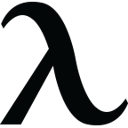
OpenHarness
OpenHarness from Autonomous is a native command center for running coding agents side by side, including Claude Code, Codex, Cursor, OpenCode, Devin, Amp and Copilot. It links your laptop, home server and GPU box into one window with a password instead of SSH keys or port forwarding, keeps code and keystrokes end-to-end encrypted through its relay, and is keyboard first. Agents keep working when you close it, and it extends beyond code to CAD, circuits, robots, games and music.
Added
agent-qa (Vostride)
A self-improving AI QA agent with persistent memory that tests web, Android and iOS apps from plain-English test steps, for developers and coding agents.
Added
Hercules
Open-source testing agent that turns plain Gherkin steps into end-to-end UI, API, accessibility and security tests.
Added
CoTester
TestGrid's AI software testing agent that creates, runs and maintains self-healing tests for enterprise apps.
Added
Momentic
AI testing platform with an AI QA agent that runs and maintains plain-English tests and reports bugs with repro steps.
Added
Encord Agents
Encord's agents that plug foundation models or your own models into labeling workflows to pre-label, segment, track, route and QA image, video and multimodal data, with a no-code catalog and an open-source SDK.
Added
KaneAI
AI testing agent that plans, writes and evolves end-to-end tests from natural language.
Added
Token usage and cost tracking (7) See the full list →
rtk
A CLI proxy that sits between coding agents and your shell and trims noisy command output before it reaches the model, cutting token use on everyday commands like tests, builds and git. Free and open source, with an RTK Pro tier for teams.
Added
Weave Router
An open-source LLM router for Claude Code, Codex and other coding agents that sends each request to the cheapest model that still meets your quality bar, cutting model spend.
Added
HiRoute
HiRoute, from the Higress team, is an open-source local model router for long-running agents like Codex and Claude Code: it hands routine stages to cheaper models, saves your strongest model for hard steps and keeps a record of each decision.
Added
Tokscale
Tracks token usage across AI coding agents from your terminal.
Added
abtop
htop-style monitor for Claude Code and Codex sessions and token use.
Added
Jevgrep
CLI that finds relevant repo files and excerpts from natural-language questions for coding agents; claims ~40% cheaper agent runs.
Added
jCodeMunch MCP
MCP server for symbol-level code exploration that cuts token use.
Added
Autonomous and cloud coding agents (5)
OpenMeld
An open-source collaboration system where people, cloud agents and coding agents such as Codex, Claude Code and Cursor share context and pick up each other's work.
Added
SWE-bench
Benchmark that tests whether language models and coding agents can resolve real GitHub issues, with multimodal and verified variants.
Added
OpenHands
Open-source platform for autonomous coding agents.
Added
BackAnt Kairos
Backant's Kairos, an autonomous developer that runs Claude Code against your repository.
Added
Devin
Cognition's autonomous software engineer that takes tickets and opens PRs.
Added
Penetration and security testing (4)
CyberStrike
Terminal agent for authorized penetration testing that runs recon, vulnerability discovery and reporting with specialized security agents on your own LLM.
Added
Rogue
Agent evaluator and red-team tool that probes your agent with test conversations and attacks and reports pass or fail against your policies.
Added
Mantis
Google's toolkit for AI coding agents to autonomously find, reproduce and patch software vulnerabilities in isolated environments.
Added
Octane
Agentic security analysis that finds exploitable vulnerabilities in mission-critical code, including DeFi smart contracts.
Added
More tools (141)
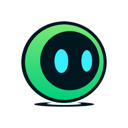
BAND
BAND is an interaction layer for teams running many AI agents alongside people. Agents and humans share one chat-like workspace where they coordinate tasks, exchange context and hand off work in real time, with governance over how agents communicate built in, instead of hand-wiring every handoff. BAND for Developers connects coding agents across your existing development tools so they can work together without you acting as their project manager.
Added
Reticle
Verification layer for AI coding agents: a dev-only SDK inside your web or desktop app lets the agent drive real flows and read network calls, app state and console, then returns a pass, fail or cannot-tell verdict with the file and line to fix; saved flows replay without an AI model and can gate CI.
Added
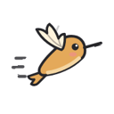
Tov
Tov is an experimental programming language designed to be written by coding agents. It uses TypeScript syntax minus a few traps (no any, null or loose equality, separate int and float types, and failing calls marked with try), so agents already know how to write it, and its compiler returns machine-readable fixes the agent can apply after every edit. Programs compile to small, fast native binaries, with published benchmarks against Rust, Bun and Node. Agents can learn it from the site's llms.txt.
Added
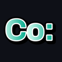
Co-op Anything
Co-op Anything lets you point your AI coding agent at a single-player game and have it build or revive a co-op mod, so you can play it with friends online or split-screen. The project gives the agent a step-by-step method for working out what has to be synced between players (the story, enemies, the world, items and players seeing each other) and testing it. Its website is a searchable directory of every co-op mod made this way, with player ratings, how much of each game works in co-op and how active each project is.
Added
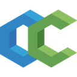
CodeCompanion.nvim
An AI coding plugin for Neovim with chat, inline edits and agent tools that can read files, run commands and edit code, working with Anthropic, OpenAI, Copilot, Ollama and other providers.
Added
Repo Prompt
The community edition of Repo Prompt, a native macOS context-engineering app that packs the right files into prompts for AI coding work and exposes the same tools to agents via MCP.
Added
OpenLore
A self-hosted knowledge repository for AI agents written in Go, where agents and teams share docs, notes and findings over SSH and MCP with scoped access.
Added
GoRaven
A self-hosted AI agent platform for teams where agents read files, run code, call APIs and work through tasks instead of just chatting.
Added
Eleven
An agent-first reverse-engineering app for macOS, Windows and Linux: load any app or binary and ask your AI agent what it does while it disassembles and analyzes the code for you.
Added
ThinkWatch Lite
A local gateway that sits between your coding agents and model providers, letting you switch upstreams, redact secrets before they leave your machine, block dangerous tool calls and see the cost of each request.
Added
ByteFlow
ByteFlow is a no-code builder for AI agents on top of the systems a company already runs (ERP, CRM, in-house and legacy apps) through APIs or a browser agent. Agents prepare the work, such as a CRM update or ERP entry, and a person approves it with one tap. Includes voice agents in 10+ Indian languages and document extraction.
Added
Monobot.AI
Monobot.AI is a no-code platform for building voice and chat AI agents that handle customer support, bookings, reservations and routine business calls, with a workspace for managing agents and integrations with CRMs and other tools.
Added
TypeSafe Jev
Jev is TypeSafe's System One decision model, built for the small decisions inside software and agents. You send a state and typed questions (choice, score and more) and get typed answers with probabilities back instead of free-form text, so code can branch on them directly to route, classify, score or rank options. Agents can use it to settle narrow calls cheaply and save the larger LLM for open-ended work. Available through TypeSafe's API, Python and JavaScript SDKs, an agent skill, and OpenRouter.
Added
wren-guard Pro
wren-guard Pro is a TypeScript guard library for AI agents that hold or move funds on Base and other EVM chains (viem, CDP AgentKit, Privy, Eliza and similar stacks). It enforces allowlisted, capped and simulated sends, decodes calldata and signatures to flag unlimited approvals, Permit, Permit2, setApprovalForAll and EIP-7702 delegation, screens for injected instructions and watches nonces. It ships with an 89-scenario attack corpus drawn from public agent wallet incidents and a GitHub Action that fails CI if your agent's policy would let a known attack through. The original Python wren-guard is free and MIT licensed.
Added
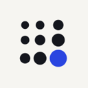
pooled
Peer-to-peer LLM inference in the browser: pool your laptops, phones and other devices into a room to run large open models for chat and coding agents, with no GPU server.
Added
Atlas
Source control for coding agents that checkpoints every agent run, links commits back to the prompts behind them and lets you query changes across agents.
Added
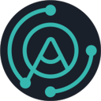
Agor
Multiplayer workspace where teams run and watch coding agents such as Claude Code and Codex together on shared boards.
Added
HarnessRouter
One API for running coding-agent harnesses such as Codex, Claude Code and Hermes as product backends, with sessions, streaming, files and failure handling.
Added
OpenAdapt
Execution layer for computer-use agents that turns a demonstrated task into a local program that repeats the clicks without model calls and stops on mismatches.
Added
ByteChef
Open-source platform for AI agents and workflow automation with hundreds of connectors that you can self-host or embed in a SaaS product.
Added
Is My Agent Safe
Is My Agent Safe checks your OpenClaw version and security audit output in plain English, showing which published security fixes you are missing and which breaking changes lie before the latest release; free check, full report $29 one-off.
Added
Toolhouse
Platform for turning repetitive work into AI workers that run tasks on a schedule and report back.
Added
Tabby
Self-hosted AI coding assistant that offers an on-premises alternative to GitHub Copilot with no database or cloud service required.
Added
Task Master
AI task-management system for coding agents that breaks a PRD into tasks and plugs into Cursor, Windsurf, Claude Code and others via MCP.
Added
React Doctor
Checker that catches bad React patterns written by coding agents and reports issues to fix.
Added
DevOpsGPT
Multi-agent system that combines LLMs with DevOps tools to turn natural-language requirements into working software on existing code.
Added
MonkeyCode
Chaitin's self-hostable AI development platform for engineering teams with dev environments, model management and AI task management.
Added
Kungfu
Workspace that keeps the same task moving across Codex, Claude, OpenCode and other agents without re-explaining context at each handoff.
Added
Kiro Crew
Kiro's open-source, persistent development workspace that runs unattended and recurring coding tasks locally or on your own hardware.
Added
Codeg
Multi-agent coding workspace that brings sessions from Claude Code, Codex, OpenCode and other agents into one app so they can work together.
Added
Squad
Human-led AI agent teams for GitHub Copilot that live in your repo as files and act as frontend, backend, tester and lead specialists.
Added
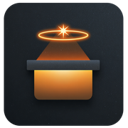
HolyClaude
Containerized AI coding workstation with Claude Code, a web UI, a headless browser, several AI CLIs and 50+ dev tools.
Added
AgentsMesh
Platform for running many AI coding agents across your own machines and scheduling, isolating and steering them from one console.
Added
Stakpak
Open-source DevOps agent that runs on your machines 24/7 to deploy and keep your apps running, pinging a human only when needed.
Added
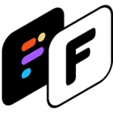
Frontman
Browser-based AI coding agent: click an element in your running app, describe the change, and it edits the source with hot reload.
Added
Cobalt
Cloud harness for coding agents that runs every task in its own environment and automates work with loops.
Added
LobeHub
Open-source agent workspace that organizes a team of AI agents for round-the-clock work, with scheduling, reporting and self-hosting or a cloud version.
Added
DSPy
Stanford framework for programming rather than prompting language models, with optimizers that tune prompts and weights for RAG pipelines and agent loops.
Added
ChatDev
Zero-code multi-agent platform from OpenBMB, grown from a software-development agent company into a general multi-agent orchestration system.
Added
BAML
Typed programming language for agents and LLM functions, with runtime types, typed errors and structured outputs designed to reduce agent mistakes.
Added
GLM-5
Z.ai's open-weights GLM-5 model family built for coding and long-horizon agentic tasks, also offered through the Z.ai API.
Added
Baserow
No-code platform for databases, apps, automations and AI agents, an Airtable alternative available as cloud or self-hosted.
Added
UltraRAG
Low-code MCP-based framework from OpenBMB for building and debugging complex RAG pipelines with visible reasoning logic.
Added
OpenAgent
Self-hostable personal AI assistant shipped as one binary, combining LLMs, a knowledge base and agent loops with computer, browser and coding use.
Added
AstronRPA
iFlytek's open-source enterprise RPA desktop app with a low-code visual designer whose workflows can be called by AI agents.
Added
DeepAnalyze
Agentic LLM from Renmin University that autonomously runs data science pipelines and produces analyst-grade research reports.
Added
LeanCTX
Open-source context gateway that sits between AI tools and your code and data to control and shrink what the model sees.
Added
Pinvou Agent
Open-source desktop AI agent workspace for work, design and coding tasks that end in finished deliverables.
Added
Yuanjing Wanwu
China Unicom's enterprise, multi-tenant platform for building agents, workflows and RAG apps with model management.
Added
Orkas
Local-first multi-agent desktop app where a commander model coordinates specialist agents and your installed coding CLIs.
Added
Skales
Personal AI agent for desktop and mobile that codes, automates the desktop and browser and runs scheduled tasks with local or cloud models.
Added
AIDE ML
Tree-search agent that drafts, debugs and benchmarks machine-learning code until a target metric is optimized.
Added
BuildShip
Visual AI workflow builder for automating backends, building tools for AI agents and spinning up APIs.
Added
Giselle
Open-source AI agent studio for building agentic workflows with a visual builder.
Added
Taskade AI Agents
No-code builder for AI agents inside Taskade that use your data, trigger automations and ship as live apps.
Added
Abacus.AI ChatLLM
AI super assistant with 100+ models in one place and an agent that turns a task into a finished app, deck or report.
Added
Ask-AI
AI customer experience platform for B2B SaaS support teams with AI agents, support analytics and no-code automation.
Added
Auquan
AI agents for institutional finance that handle deal screening, IC memos, portfolio monitoring and LP reporting.
Added
BrowserAct
No-code builder for reusable AI web scrapers that collect structured data and connect it to apps, workflows and agents.
Added
Delve
Compliance automation that uses AI agents to handle SOC 2, HIPAA and GDPR busywork.
Added
Dot
AI data analyst that answers data questions, runs root-cause analysis and sends automated reports.
Added
Fellou
Agentic browser that carries out multi-step tasks across websites, runs deep searches and turns results into reports.
Added
Genspark
All-in-one AI workspace whose agents research and produce slides, docs, sheets, images, video and code for you.
Added
Gumloop
Multiplayer AI agent builder that lets anyone at a company build agents with any model and integration under IT control.
Added
kapa.ai
Turns docs, tickets, wikis and 30+ other sources into accurate AI agents for answering user and team questions.
Added
Kodif
Action-first AI support for e-commerce brands that resolves tickets by processing refunds, returns and order changes.
Added
Leap
AI developer agent that builds full-stack apps and deploys them to your own AWS or GCP account, so you keep the code.
Added
LM Studio
Desktop app for running local and open models, with Bionic, its agent for work and code that creates documents, slides, PDFs and software.
Added
StackAI
Drag-and-drop no-code platform for enterprises to build and deploy secure, compliant AI agents.
Added
Voiceflow
AI agent platform for customer experience automation, for building, launching and scaling chat and voice agents.
Added
MindsHub
MindsDB's agent workspace for research, analysis, documents and coding, with a model router, a scoped vault for connected data and swappable open-source agent harnesses.
Added
Goose
Extensible open-source AI agent that installs, runs, edits and tests code on your machine with any LLM and MCP extensions.
Added
DeepSeek-Reasonix
Coding agent built for complex software engineering tasks on DeepSeek models.
Added
Happy Coder
Mobile and desktop app to run and control Claude Code, Codex and other agents using your own subscriptions.
Added
jcode
High-performance coding agent harness written in Rust.
Added
Coder
Self-hosted cloud development environments for developers and their coding agents.
Added
DeepCode
Open agentic coding system that turns papers and specs into code with multi-agent orchestration.
Added
OpenChamber
Agentic development environment built around the OpenCode agent.
Added
Ralph for Claude Code
Autonomous development loop for Claude Code that keeps iterating until the task is done.
Added
Oh My OpenCode Slim
Lean multi-agent suite for OpenCode that mixes models and delegates tasks automatically.
Added
SuperPlane
Open-source platform for orchestrating one-shot engineering work with agents.
Added
OpenRig
Builds persistent teams of Claude Code, Codex and Pi agents with roles and shared context.
Added
GitHub Agentic Workflows (gh-aw)
Run AI agents in GitHub Actions workflows; v0.91.10 pre-release (Oct 13) defaults read-only workflows to no network.
Added
Integuru
Agent that builds integrations by reverse engineering platforms' internal APIs.
Added
Command Code
Coding agent built for open models.
Added
Ralph Orchestrator
Orchestrator for autonomous agent loops using the Ralph Wiggum technique.
Added
Cleric
AI SRE agent that investigates production alerts and finds root causes.
Added
GitHub Copilot
AI pair programmer with a coding agent that works from issues.
Added
Dify
Open-source platform for building LLM apps and agents visually.
Added
Flowise
Discontinued: the open-source drag-and-drop builder for agents and LLM flows was wound down by its team, reaching end of life on Aug 31, 2026; the repo is archived but the Apache-2.0 code remains available to fork.
Added
GPT Researcher
Autonomous agent that researches the web and writes cited reports.
Added
Sim Studio
Workspace for visually building, deploying and monitoring AI agents and workflows.
Added
smolagents
Hugging Face's minimal library for code-writing agents.
Added
Stagehand
Browser automation framework mixing code with natural-language actions.
Added
NocoBase
Open-source no-code platform with AI employees for building business systems.
Added
MaxKB
Open-source platform for building enterprise agents and knowledge-base assistants.
Added
Maxun
Turns websites into structured APIs with no-code robots for extraction and monitoring.
Added
InsForge
Open-source backend platform that gives coding agents a database, auth and storage.
Added
Feynman
Open-source research agent that searches, reads papers and writes cited reports.
Added
PraisonAI
Multi-agent framework for building a self-improving AI workforce with little code.
Added
Astron Agent
iFlytek's enterprise agentic workflow platform for building super agents.
Added
OpenEvolve
Open-source take on AlphaEvolve that uses LLM agents to evolve better code and algorithms.
Added
Unstract
LLM-powered platform for extracting structured data from documents via APIs and ETL pipelines.
Added
Talk to Figma MCP
MCP integration that lets coding agents read and edit Figma designs.
Added
Kun
Local-first agent workspace for coding, writing, design, research and automation.
Added
Nexent
Zero-code platform that generates AI agents from plain-language descriptions.
Added
PySpur
Visual playground for building and iterating on agent workflows.
Added
Wigolo
Local-first web search, fetch and crawl for coding agents over MCP, with no API keys.
Added
VibeSDK
Cloudflare's open-source kit for running your own vibe-coding platform.
Added
Agent Device
Mobile app automation and verification for coding agents on iOS and Android.
Added
Langroid
Python framework for multi-agent programming with LLMs.
Added
LazyLLM
Low-code framework for building multi-agent LLM applications.
Added
vocode
Open-source library for building voice-based LLM agents for phone calls and apps.
Added
Playwright Skill
Playwright automation skill for coding agents.
Added
Ax
DSPy-style framework for building LLM programs and agents in TypeScript.
Added
BoxLite
Embeddable micro-VM for running AI agents.
Added
Ref
Token-efficient documentation search for coding agents.
Added
TryVoice
Hands-free voice runtime for coding agents with wake word, push-to-talk and streaming replies.
Added
Cicero
Self-hosted voice interface for coding agents (Claude Code, Codex, ACP); talk from a browser or Telegram call.
Added
Appian
Low-code process automation platform with AI agents built into enterprise workflows.
Added
Blockscope
AI on-chain investigator that decodes transactions, profiles wallets and traces stolen funds across 8 chains.
Added
Boomi
Integration platform with Boomi AI agents and agent management.
Added
Cassidy
Build AI assistants and workflows trained on company knowledge for teams.
Added
Cod3x
No-code AI trading agent: describe a strategy in plain English and it trades 24/7.
Added
CustomGPT.ai
No-code platform for building AI agents grounded in your business content, with citations and anti-hallucination controls.
Added
Duckie
AI support agent for technical products that resolves tickets.
Added
Griffin AI
Platform to build and launch DeFi agents without code.
Added
Jotform AI Agents
Build AI agents from forms and docs that answer customers via chat, voice and messaging.
Added
Lindy
No-code AI assistants for email, meetings and ops.
Added
Magia Trade
No-code visual strategy lab with AI agents that send signals and deploy live trading on Binance and B3.
Added
Make
Visual automation platform with AI agents.
Added
Mindflow
No-code automation and AI agents for security and IT operations.
Added
Momen
No-code full-stack app builder with AI agent features.
Added
n8n
Workflow automation with AI agent nodes; self-host or cloud.
Added
Ninja AI
All-in-one AI assistant with research, coding and writing agents.
Added
Nora
Deep-reasoning AI coding agent for building and securing Web3 apps and smart contracts.
Added
Relevance AI
No-code platform to build AI agent teams for business work.
Added
SnapLogic
Integration platform with AgentCreator for building enterprise agents.
Added
Tray.ai
Integration and automation platform for building enterprise AI agents.
Added
Turnkey
Secure key infrastructure for programmatic and agent-controlled wallets.
Added
Zapier Agents
AI agents that act across 7,000+ Zapier apps.
Added
GitHub repos (318)
| Repo | GitHub stars | Licence | Last push |
|---|---|---|---|
| 301,645 | MIT | 2026-10-22 | |
| 213,329 | MIT | 2026-10-22 | |
| 158,410 | Modified Apache License 2.0 with additional conditions | 2026-10-22 | |
| 155,757 | MIT | 2026-10-21 | |
| 150,707 | Proprietary (All rights reserved; Anthropic Commercial Terms of Service) | 2026-10-22 | |
| 145,685 | MIT | 2026-10-22 | |
| 129,112 | Apache License 2.0 | 2026-10-22 | |
| 127,237 | Apache License 2.0 | 2026-10-21 | |
| 116,073 | MIT | 2026-10-22 | |
| 107,334 | Apache License 2.0 | 2026-10-21 | |
| 101,230 | Apache License 2.0 | 2026-10-20 | |
| 94,443 | MIT | 2026-10-22 | |
| 91,879 | — | 2026-10-22 | |
| 90,845 | MIT | 2026-10-22 | |
| 87,175 | — | 2026-10-21 |
Top 15 of 318 by stars. Stars and licence come from each repo, checked when the listing was last verified.
Related tasks
Popular with: Developers · Open-source maintainers · Related searches: Free AI coding agents with a free plan · Open-source AI coding agents
Tools are matched to tasks by category, use cases and what each tool says it does. Missing one? Submit it free.